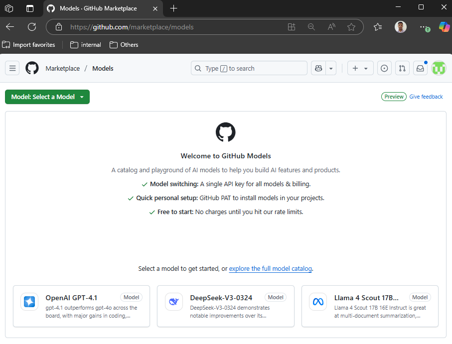

Explore Semantic Kernel using GitHub Models¶
Welcome to the hands-on labs! üéâ¬∂
In this lab, you will learn how to interact with Large Language Models (LLMs) using Semantic Kernel.
You will use GitHub Models, which are free and provide a great way to prototype and experiment with different Large Language Models (LLMs).
Setting up your environment üî߬∂
- Complete the Getting Started lab to set up your environment.
- You will be using GitHub Models in this lab. From your browser, navigate to GitHub Models Catalog. You can chat with the models from the Playground.
 -
We will be interacting with the models from our own applications, so we need an API key to authenticate our requests. Follow these steps to get your API key:
- From the Playground, select
gpt-4oor any other chat completion model you want to use. - On the top right corner of the Playground, click on the Use this model button. This will open a pop-up window with API key options.
- Select Get Developer Key. This will take you to the page to create Personal Access Token (PAT).
- Click on Generate new token.
- Give your token a name, like
aiagent-workshop. - Set the expiration to No expiration (or choose a suitable duration).
- Under Permissions, navigate to Models and select Read-Only access.
- Click on Generate token. You will see a confirmation message with your new token.
- Copy the generated token and save it securely. You will need this token to authenticate your requests.
- From the Playground, select
-
Navigate to the code repository and run the following command to install the required packages:
cp -r .env.example .env -
Update the
.envfile with your GitHub Models API key:GITHUB_TOKEN=<your_github_models_api_key>
{kind=link}
Let's get started üë©‚Äçüíªü§ñ¬∂
Start your first exercise for this lab here:
üëâ Lab 1.1: Interacting with Large Language Models using Semantic Kernel
Happy coding!